原本打算從濟州島羅波羅酒店步行到龍頭岩, 可惜天氣實在太惡劣, 最終只去到離龍頭岩不到二百米的龍淵雲橋 (용연구름다리)及龍潭公園 (용담공원), 雖然再步行五分鐘便可到達目的地, 無奈風勢實在太強勁, 雨傘接連吹翻, 恐怕有危險, 唯有被迫放棄, 而濟州島所有行程也宣佈全部結束了。
離開龍淵雲橋, 循原路走往酒店。再一次經過波濤洶湧的海岸。
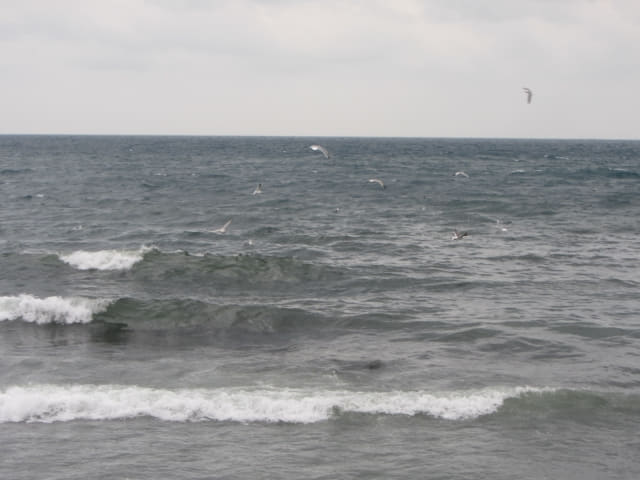
離開海岸, 進入村莊, 風勢明顯沒有那麼強勁。很快便穿過壁畫村。
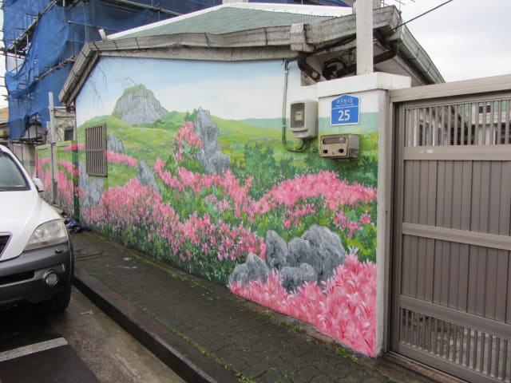
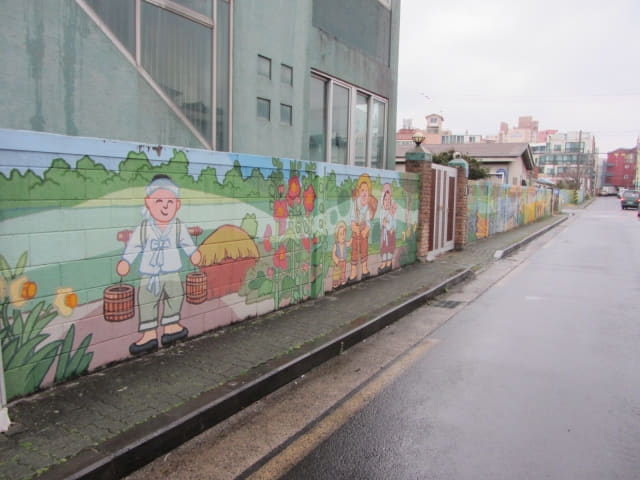
沿途的房屋。
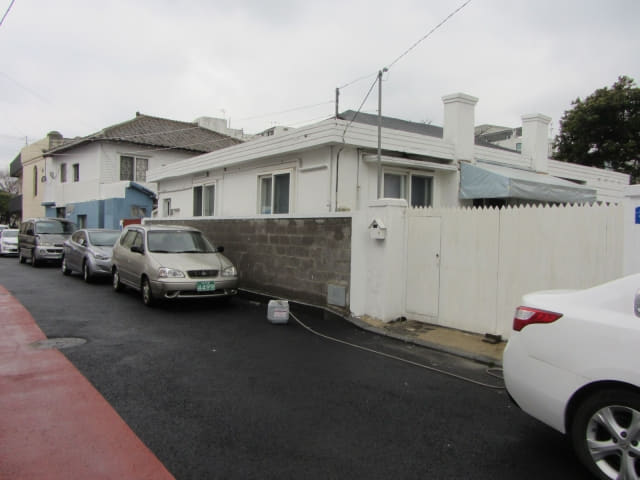
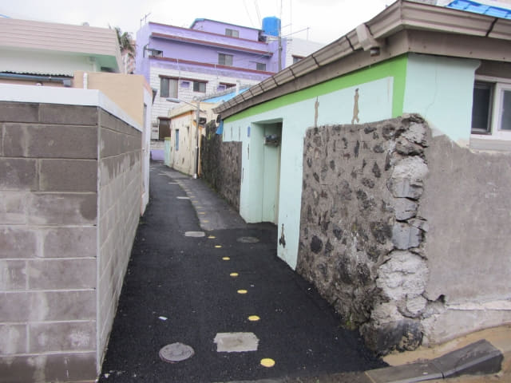
濟州牧官衙
很快便返回濟州牧官衙。看見只是上午十時十分, 便在濟州牧官衙門前巡巡。
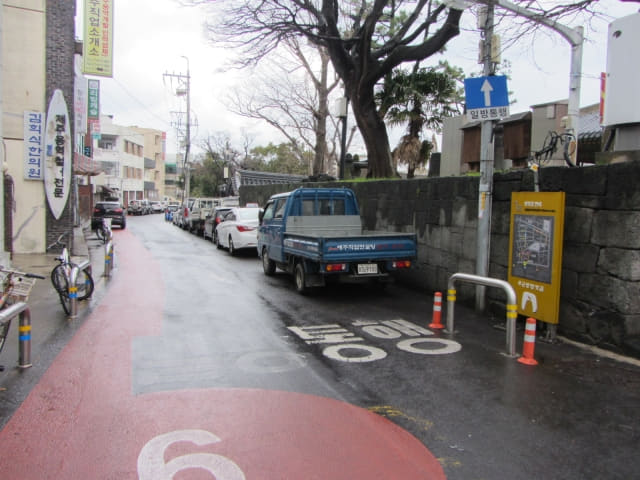
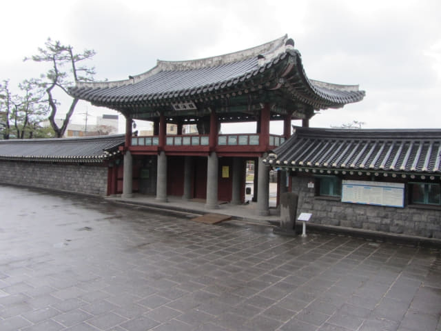
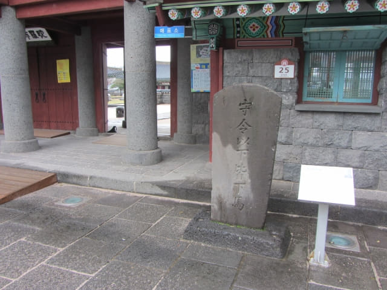
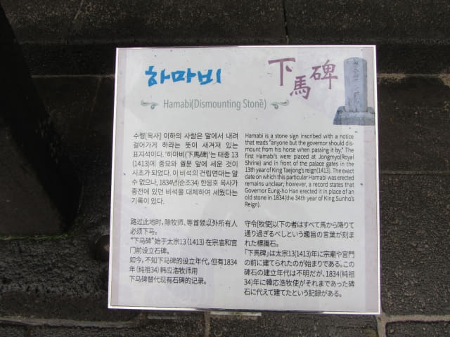
濟州牧官衙是需要付款進場參觀的, 成人是1,500日元, 並不便宜, 站在大門口探頭向內看看算了。
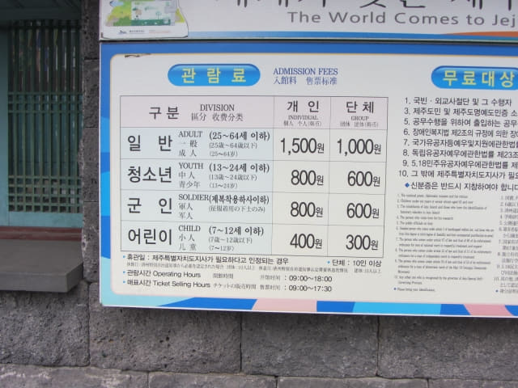
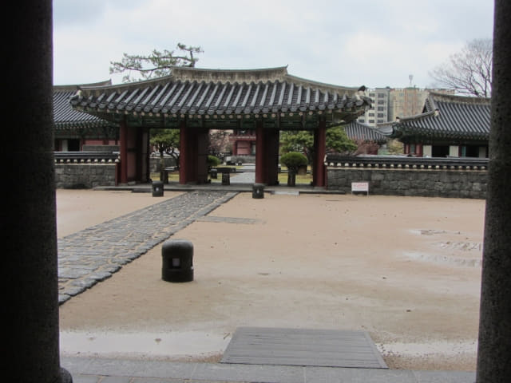

入口前有介紹濟州牧官衙的簡單歷史背景。
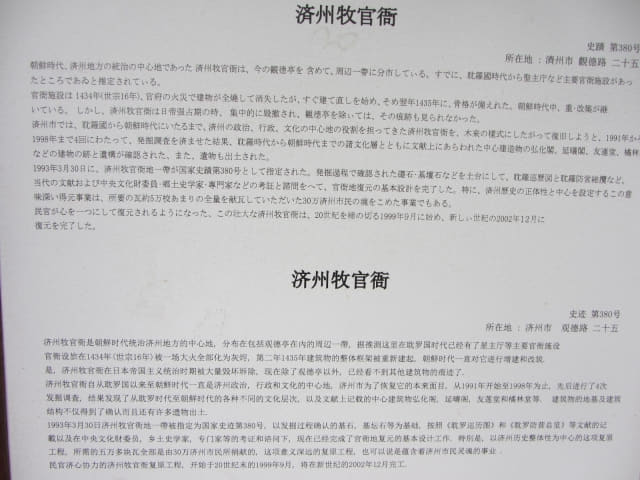
入口前還有濟州牧官衙的遊覽地圖。地圖前有一位女士站著, 全神貫注地看手機, 相信正在進行很大的生意。我想拍攝地圖, 但給她遮擋, 走到她的前面, 將相機左舉右舉, 咳了幾聲, 看見她好像木偶一樣, 一點反應也沒有, 忍不住在她耳邊「咔嚓、咔嚓…..」的拍了幾張照片。哈哈~~~ 全無反應! 看見這樣, 便走到她面前, 「咔嚓、咔嚓…..」的又拍了幾張照片。結果都是一樣! 唉! 她根本不知道四周發生了什麼事! 算了吧!
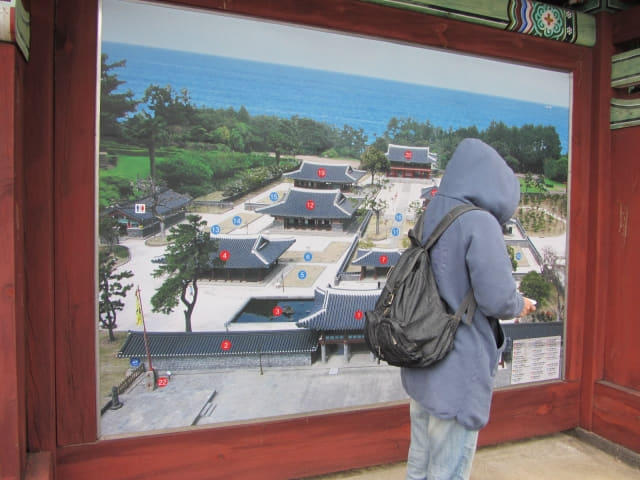
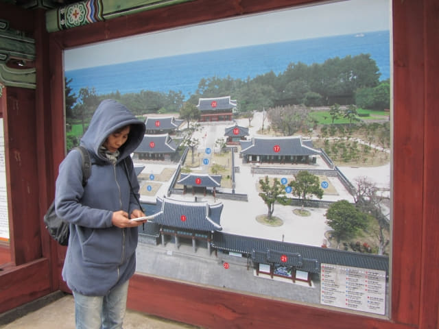
濟州島羅波羅酒店就在濟州牧官衙對面, 是時候返回酒店, 準備往濟州港旅客碼頭, 然後乘船往韓國本島的木浦。
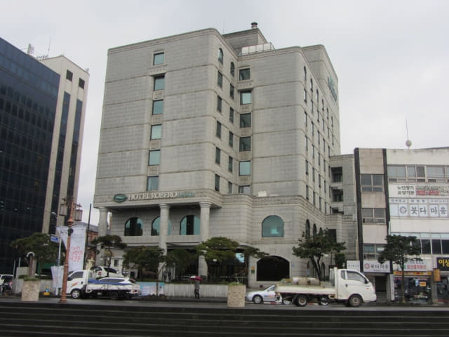